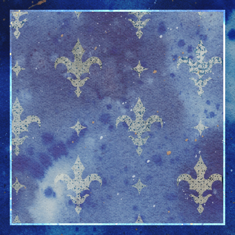
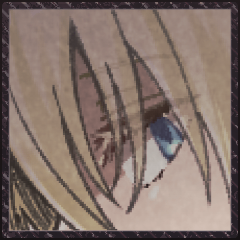
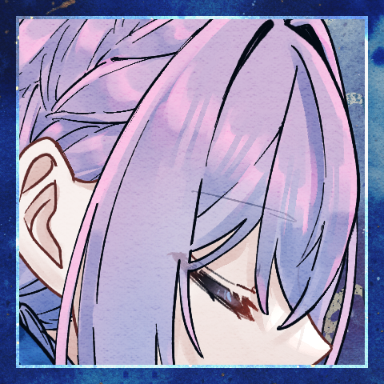
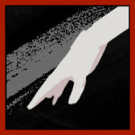
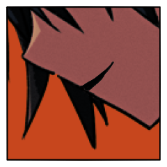

GM
「赤いくつをはいて、踊っておれ。お前が青じろくなって冷たくなるまで、お前のからだがしなびきって、骸骨になってしまうまで踊っておれ。お前はこうまんな、いばったこどもらが住んでいる家を一軒、一軒と踊りまわらねばならん。それはこどもらがお前の居ることを知って、きみわるがるように、お前はその家の戸を叩かなくてはならないのだ。それ、お前は踊らなくてはならんぞ。踊るのだぞ――。」
GM
あの裁判からしばらくの間、四人は旅を続けていた。
GM
強大な救世主や亡者との裁判をくぐり抜け、気がつけば、ひとかどの救世主一行となっていた。
GM
エールさんは今回のシナリオに参加する動機として依頼を含めていますが、懇意としている組織に希望はありますか？
GM
では、みなさんは公爵家の所有する屋敷に呼びつけられ、仕事の依頼をされています。
GM
「赤い靴」とは、聖遺物に相当する不思議の品である。履いた者に際限なく力を与えるが、徐々に心身を支配していく。
GM
ある救世主一味が所有していたが、一月前に内輪揉めにより全滅。赤い靴は救世主のうち一人の身体に寄生し、現在は王家の庭園を彷徨っているらしい。
GM
知っていても知らなくても構いません。こういったことを説明してくれます。
エール
与太話の多すぎる堕落の国のことだからなあ。
エール
初耳かも。初耳ですか？ わかりません。
三人の顔を見ましょう。
ラサ
適当な相槌を打ちながら、なんとはなしに自分の足元を見ている。
センバ
「なんか呪いの装備品って感じですね」
やな感じだなあの顔
ラサ
転移させられたときと同じ、何の変哲もない茶色のローファーだ。
クラレット
「そう……」
少しばかり思案するような顔で相槌を打つ。堕落の国で新調したストラップシューズを見下ろした。
ラサ
「名前だけは聞いたことあるなあ。といっても、元の世界でだけど」
エール
事あるごとに同行者の顔を窺う癖がある。
まともに足を守れる靴を履くようになりました。
センバ
スニーカーを履いている。
「おとぎ話にそんなのあったかも」
ラサ
「履いたが最後、死ぬまで踊り続けなければいけない、って靴」
GM
「ラサ様の知る赤い靴の伝承に加え、この赤い靴には、比類なき猟奇の力が与えられる、というものがありますね」
GM
「私も直接見たわけではありませんが、聞くところによると、履きし者は象のごとき脚力を得て、救世主や亡者の首を簡単に蹴り飛ばすのだとか……」
GM
「それが誰の管理にもなく独立して動いているというのは、看過されざる事態」
GM
というわけで、公爵家の者はあなたたちに赤い靴の入手を依頼します。
GM
ちなみにここで依頼を断ってもらっても、シナリオは進みます。
ラサ
「大丈夫なのかなあ。聞く感じ始祖とかエース級だったりしない？ それ」
ラサ
「ボクたちを消す公爵家の陰謀かもしれないよ」
エール
「うーん」考え込む。ラサはそういうとこあるので、今更慌てませんが。
クラレット
「まあ、いつ王家の庭から飛び出してくるやもしれないというのは、困ることだけれど……」
エール
「様子見だとか……偵察までの範囲なら、というのは」
どうだろうか、と、これは仲間たちに。
エール
「クラレットの言う通り、いつ飛び出してきて遭遇するとも分からないし……」
クラレット
「偵察で済むかも分からないけどね……」
ラサ
「まあ、赤い靴が救世主カウントされるなら、責務をクリアするにはちょうどいいとは言えるかも」
クラレット
気乗りはしないが、断固として断るほどの理由も感情もなく。ならば仲間たちに従うのみだ。
クラレット
「これ今どうなってる？ 多数決で行く方かしら？」
クラレット
なんかみんな様子見みたいな顔してるなと気づいた。
クラレット
たまには様子見してみようと思ったらこのざまよ。この人たち本当に主体性がないわ。
エール
ふわ……ふわ……とした意見は出すんですが。
クラレット
エールの態度、腹立つわね……（言わない）
センバ
主体性なし人間だ、その場の空気を読んでいる。
ひとりで空気読みエクストリーム。
ラサ
「じゃ、エールの案を採用して、偵察ってことにしますか」
センバ
「任せて下さい、有耶無耶にできます、何もかも」
クラレット
「まあね……堕落の国で希望を持って生きるなんてできやしないし」
クラレット
「いつだって緩慢な自殺。今回は華々しい最期を飾れるかしら？」
GM
というわけでみなさんは庭園へと旅立つことになりました。
GM
庭園まではまあまあ遠いので、大廊下というワープゾーンを経由して向かうことになります。
GM
大廊下を抜け、庭園まであと一日歩けば着くかな、といったところで野営をすることになりました。
GM
PC三人のうち、誰か一人がなんとなく寝付けなくて、目を覚まして起き上がります。
ラサ
目を開くと、ラサが自分の荷物をいじくっているのが見える。
センバ
「う、うーん……？」
物音で目を覚ました。様子をうかがう。
ラサ
交代で見張りをしていて、ラサの番だったのだ。
センバ
「珍しいですね。なんか多淵さん忘れ物とかしても『今は必要なかっただけのことだよ』とか言いそうなのに」
センバ
「自信があって、堂々としてて、頼りになって……ちょっと疑り深くて、過激な所があって、……まあまあ長い付き合いの女子……」
センバ
ぎゃ、逆！？てことは……自身が無くて頼りがいが無くて疑うことがなくて穏当で……
ラサ
「しみじみ君って風格とかつかないな、って思ってる」
センバ
「う……そう言われると……そうですね。なんか……ずっと必死でやってきてるっていうか、余裕ないって言うか……」
センバ
「エールさんの時も正直ヤバかったですよね。今じゃ仲間ですけど」
ラサ
「ヤバかったどころか何かの間違いで生きてるって感じ」
ラサ
「どうやらこの世界はボクたちに生き延びてほしいらしい……これもまた陰謀だな」
センバ
「……何か変わんないですね、多淵さんも」
言いつつ笑った。そういう変わらない所が頼れる所だと思っている。
センバ
「え、え”っ、俺の知らない所で実は悪に染まってて裏切るチャンスを伺ってるとか無しですよ」
センバ
「裏切る時は一撃で俺がわかんないうちに終わらせてくださいよ、なんか多淵さんが裏切るかもって思うと……ちょい嫌だし……あー……あー……」
ラサ
「生き延びれば生き延びるほど、その日は近づくんだぞ」
センバ
「……まあ。知らないつもりではないですけど」
ラサ
「今だって、わざわざヤバい相手と裁判するかも、ってなってんのはさ」
ラサ
雑魚狩りなんてしたってマジでしょうがないからな、この世界。
センバ
「夏休みの宿題の事とか、後回しにしたいってのと多分同じです、許されるなら出さずになあなあで誤魔化したいですよ」
ラサ
「君って死ぬ寸前まで、なんとか後回しにできないかなって思ってそう」
ラサ
「それはまあ、君のいいところではあるとも思ってるし……」
センバ
「まあ、どうせいつか終わるし、誰か別の人が出来るなら……あんま頑張らずにどうにかしたいんですよ」
ラサ
「じゃあ、ボクと裁判することになっても、それぐらいの感じでいなよ」
ラサ
「そろそろ休みなよ。無駄話ばっかりしてると、明日に響くぞ」
センバ
「緊張してるなら、手にあれ、アレ書いて飲むといいですよ！！」
センバ
ああ、クソ、なんだっけ？何書いて飲んだらいいんだったっけ。
マズい、俺はどうしてこんな時も思いつかないんだ。
いや、言わなきゃ良かったんじゃないか？これ！いや。でも。
センバ
「うっさいなあもう……普段通りに居て下さいよ、頼りにしてるんですから」
センバ
言いつつ眠りに戻っていく。休まないといけないのは事実だし。
GM
センバが目を閉じると、ラサは再び荷物をあさり出す。
GM
眩いばかりの色とりどりの花壇、冷たく澄んだ水を湛えた噴水、赤いバラの花をつけた巨大な樹。
GM
ラサの痕跡が、ラサの居場所が王家の庭園であることを示していた。
エール
美しい庭園だ。堕落の国にある光景とは思えない。
センバ
「……多淵さん、先に行っちゃったみたいで……その……」
センバ
責任を感じているが同時にどうにか誤魔化して俺のせいじゃないですと言いたい気持ちもある。
GM
この庭園は、フラミンゴの亡者や庭師の亡者が闊歩する、危険な迷宮でもある。
エール
誰のせいとかじゃあない。
その後の交代はわたしだったし。
センバ
「誰かが通った後みたいな……誰かが狩り尽くした後みたいな」
エール
ラサひとりでそれが為されるはずもないが。
自分たちはとある噂を聞いている。
センバ
「いくら多淵さんが凄くても……相手の数考えるとですよ」
クラレット
「赤い靴は全滅した救世主の一人に寄生していると言われていたけど……」
クラレット
「寄生された救世主がやったのか、それとも……」

クラレット
追います。少なくともクラレット一人は。
センバ
追います。やはり知り合いを見捨てるのは寝覚めが悪いのです。
GM
凄まじい速度で、なにか球状のものがあなたたちめがけて飛んでくる。
エール
二人を庇う形に飛び出して、それを腕で受ける。
少女
飛んできた方向を見やれば、そこには人影がある。
エール
自分の腕に当たって弾けた肉塊が、地面へと落ちる。
少女
しかしそんなものよりも、もっと目を引くものがあった。
少女
「何日か数えるのが面倒だから、見つけ次第達成するようにしてるの」
クラレット
「その子は多渕ラサ。あたしたちの仲間よ」
エール
コートについた血を払って、少女の姿へと向き直る。
センバ
思考は凍り付いている。呆然としている。考える隙間は無い。
センバ
ただ。目を閉じることはない。見ている。
目を逸らさない。それが唯一の成長。悪化でもある。
その中で目の前の少女に対する結論を無理に出そうとする。
センバ
結論という逃げ道。それは。
「一度、引きませんか」

エール
痺れる腕を庇いながら、センバへと視線を向けた。
クラレット
「……」
嘆息を一つ。それから、頷いた。
センバ
「引きますよ」
先延ばしで、課題の延長でしかない事くらい、俺もわかってる。
クラレット
怒り、困惑、恐怖。
それらすべてを目の奥に隠して。
クラレット
「“積もる話を片付けるために、お茶会を”」
エール
クラレットの言霊の紡がれる一方に、少女から距離を取っている。
二人を庇える立ち位置のままに。
センバ
隙があるなら、逃げなくてはならない。
それが今の最善の行動だと信じて。
エール
その弛緩を読み取って踵を返す。
二人もそうすると知っているから。
クラレット
白と黒のエプロンドレスが靡いていく。
次の裁判が終わるころには、ラサも装備を新調してもいいかもしれない、なんて話していた。
クラレット
こんなものになってほしかったわけじゃないのに。
“赤い靴”
その一瞬で、三人は手の──脚の届かないところに行ってしまった。
“赤い靴”
──もっとも、逃げるつもりもないみたいだけど。
クラレット
＊ティーセットの1つをエールに譲渡します
[ クラレット ] ティーセット : 2 → 1
エール
＊ヤリイカエリートを１コセンバくんに譲渡。
クラレットさんからティーセットを１コ受け取ります
[ エール ] ヤリイカエリート : 2 → 1
[ センバ ] ヤリイカエリート : 0 → 1
[ エール ] ティーセット : 0 → 1
GM
お茶会は庭園でPKから逃げたり追ったりして進行します。
GM
よかったら庭園シーン表をお使いください（1d6）
クラレット
1D6 庭園シーン表 (1D6) ＞ 3
GM
3 ガゼボのある一角。ここなら休息できるかもしれない。
クラレット
果たして本当に休息できるんでしょうか？
クラレット
まあ、とにかく誘い出さないことには始まらないでしょう。ガゼボで堂々と休んで赤い靴が来るのを待ちます。
“赤い靴”
じゃあ、茂みを蹴り破ってまっすぐやってきます。
クラレット
他の仲間たちには茂みに隠れててもらっていたんですが大丈夫？ 居ない方の茂みだったよね？
“赤い靴”
すぐには攻撃しない。さっきの技を警戒している。
クラレット
「まあね。救世主の裁判の前にはお茶会がつきものよ」
クラレット
先程の険しい顔は消えて、落ち着いた笑みを返す。
クラレット
「あなただってそうでしょう。他の救世主を出合い頭に蹴り殺すことなんてなかなかできないはず」
クラレット
「この庭園に来られる程度に力のある救世主なら、流石にね」
“赤い靴”
「末期の言葉ぐらいは聞いてあげてもいいわよ。そこまで残酷ではないから」
“赤い靴”
一定の距離を保って歩いている。いつでも攻撃に入れる圏内。
“赤い靴”
「さっさと蹴り殺せるなら、それに越したことはないわね」
クラレット
赤い靴が鈍い陽光にかがやいている。
濁った血に濡れてなお、鮮やかにつやめいている。
クラレット
「最期の言葉はいいけど、あなたのことを聞かせてくれない？」
クラレット
「どこから来たの？ どうやって過ごしているの？ 何が目標なの？」
“赤い靴”
「ある程度は知っているでしょう？ “赤い靴”について」
クラレット
「ある程度でしかないわよ。前の持ち主の詳細も聞いていないし、出処がどこなのかも分からないし……」
クラレット
「お茶の一杯くらいは淹れてあげるから、どれか一つくらいは聞かせてくれていいんじゃない？」
“赤い靴”
「ただ……“踊る”ための靴でしかない」
クラレット
「……まあ、目的は少しくらいはっきりしたかもね」
クラレット
「“踊る”ためなら誰でもいいの？ 誰が履いても？」
“赤い靴”
「あなたって凶器にはこだわるタイプ？」
クラレット
「拘らない方だからお揃いね。別に使えるならナイフでも斧でも靴でも何でもいいわよ」
クラレット
「あたしたち、あなたの“回収”を依頼されてきたの」
クラレット
赤い靴の攻撃が届く範囲。それに一歩、一歩と近づいて。
“赤い靴”
つま先が円の軌道を描いて、あなたの首を刈りにかかる。
クラレット
完全に止めることはできはしないだろう。それでも身体は軋む。
“赤い靴”
止められ、届かずとも何度も攻撃を繰り返す。
クラレット
「あたしの脚と仲良くはしてくれないの？」
“赤い靴”
「あなたの脚以外とは、仲良くする必要はないの」
クラレット
「ふうん……肉体が損傷しても使えるの？」
“赤い靴”
「試して駄目だったら、別の身体を待つだけね」
クラレット
「じゃあ、ラサの身体で試してはいないのね？」
“赤い靴”
しかし、致命的な損傷があるようには見えなかった。
クラレット
「あのね、あたし、あなたを履きたいのは本当よ」
クラレット
「だって、そうしたらラサが戻ってくるかもしれないんだから」
クラレット
この靴は、どのような道程を経てここに在るのだろう。
クラレット
その道中で、こうして対話したひとは如何ほどだろう。
クラレット
教えてもらえないものは、想像もできない。
クラレット
険しい言葉が、不理解から来るのか、理解の裏返しなのかすら。
“赤い靴”
「そんなものを大切にしているから、死ぬのよ」
クラレット
苛立ちが伝染したようでもあるし、煽りに堪えかねてのことのようでもあった。
クラレット
「仲間を……家族を、大切にしないで生きることに何の価値があるの？」
クラレット
「あたしは、ラサを見捨てるくらいならここで一緒に死ぬ！」
クラレット
「……あなたには、解らないでしょうけど！」
“赤い靴”
choice[猟奇,才覚,愛] (choice[猟奇,才覚,愛]) ＞ 愛
“赤い靴”
2d6+3>=7 愛判定 (2D6+3>=7) ＞ 9[5,4]+3 ＞ 12 ＞ 成功
[ “赤い靴” ] ラストヤリイカ : 2 → 1
[ クラレット ] ティーセット : 1 → 0
[ “赤い靴” ] HP : 21 → 20
クラレット
2d6+4-8+2=>7 判定（＋才覚－横槍＋ティーセット） (2D6+4-8+2>=7) ＞ 9[4,5]+4-8+2 ＞ 7 ＞ 成功
[ “赤い靴” ] 疵:仲間 : 0 → -1
“赤い靴”
断頭斧のように振り下ろされた脚は狙いがそれ──
クラレット
脅し、ではないだろう。そのような性格ではなさそうだから、狙いが逸れた？
“赤い靴”
今度は死神の鎌のような横薙ぎが、狙い過たず振るわれ──
センバ
そして、自明ではあることだが。
一人で三人に勝つことは難しい。
だから俺たちは待っていた、割って入れる瞬間を。
エール
仲間が十分にその疵を探り、暴き立て、露わにする成果を。
確かめたのならば、もう十二分。
エール
疵のままに振るわれる力を、疵の力で受け止める。
センバ
そしてクラレさんの手を引く。
今出来る事は十分した、ハズですよね。
エール
「……ご承知、だったろうに」
分かっていても痛いな。流石に。息を抑えながら。
クラレット
「じゃあね、“赤い靴”。あたしの足にぴったりなことを祈ってるわ」
GM
5 女王のクロケー場。フラミンゴの亡者が首を狙っている。
GM
実際にはフラミンゴの亡者だったものが転がっています。
センバ
どれも既に事切れた後の姿だ。彼女の仕業だというのか。これが。
センバ
次は俺がやる、とカッコつけたのは良いんだけど。
エール
殿でクラレットを気遣いながら周辺を警戒している。
“赤い靴”
蹴り飛ばされたものと思しき肉塊が三人目掛けて飛来する。
エール
クラレットに向けられたものから優先して叩き落とす。
エール
肉塊の潰れる嫌な感触が腕に伝わるが、それだけだ。
“赤い靴”
おびただしい腐敗臭と血臭があたりに漂う。亡者の肉片だ。
クラレット
エールが叩き落すのを見守るのみ。いつもの光景だ。
センバ
「……まだお茶会って事に、なってますから」
センバ
「じゃあ、殴り合いでもしますか。赤い靴さん」
センバ
「……俺たちを倒したら次はどうするんですか」
“赤い靴”
「このゲームは最後の一人になるまで終わらないみたいだし」
“赤い靴”
「“踊る”以外の手段を、私は知らないもの」
“赤い靴”
「自分の履いてる靴に毎日話しかけてみたら」
“赤い靴”
「ある日、突然気さくに喋りはじめちゃったりして」
センバ
バットを手に取った。
ふざけるな。靴が喋るなよ。そんなことあり得る訳がない！！
“赤い靴”
「あなたの都合の良い現実を、押し付けてみなさいよ」
センバ
寝て起きたら普通に明日が始まって。
空想やファンタジーのような、自然現象であり得ないことは存在しない。
センバ
そんな都合の良い考えを俺は押し付けるようにして足下を狙う。
“赤い靴”
「そいつを倒せば、あなたのお友達は帰ってくる？」
センバ
「俺の世界じゃ靴は喋らない。魔法は無いし、漫画の出来事」
“赤い靴”
「あなたの世界では、そんなに確かなものなのかしら」
センバ
思考停止。俺は都合の悪い言葉を受け止めない。
センバ
クソつまんねえくせに、一番強固な顔して寄って来る。
センバ
「探しますよ。多淵さん遅いな、まだ戻って来ないのかなって」
センバ
現実に縋り付いているくせして、都合の良い時だけ現実逃避するんだ。
センバ
脛を狙った。足先ばかりは狙えない。そもそも、避けるにも受けるにも。
“赤い靴”
「狙うなら頭のほうがいいんじゃない？」
“赤い靴”
潜るように上体を沈め、水面蹴りを放つ。
センバ
爪先は狂気。
凶器であり狂気。
水面を滑るような動き。
それを見て受け止めにかかり、
センバ
起き上がる。
普通ならば死んでいただろう。
俺も結局、普通の人間では居られない。
センバ
「身体が捩れて、足が壊れて、血肉が軋んでも？」
センバ
「身体が壊れても続けるなら、制御なんて出来てない」
“赤い靴”
「踊りの果てに、自らを失うとも知らずに」
センバ
勝手な想像だ。この人は、違う。違うと信じている。
違うんだ。
センバ
「俺は、そんな力なら終わりにした方がいいと思いますよ」
“赤い靴”
choice[猟奇,才覚,愛] (choice[猟奇,才覚,愛]) ＞ 愛
“赤い靴”
2d6+3>=7 愛判定] (2D6+3>=7) ＞ 4[3,1]+3 ＞ 7 ＞ 成功
[ “赤い靴” ] HP : 20 → 19
[ センバ ] ティーセット : 1 → 0
センバ
2d6+4=>7-1+2 判定（＋猟奇） (2D6+4>=8) ＞ 7[2,5]+4 ＞ 11 ＞ 成功
センバ
「行動に出すの、あんま得意じゃないんです」
“赤い靴”
手でそれを受け止める。指の骨の折れる小さな音がした。
センバ
少し嬉しく思ってしまう。
俺も結局、変わらずには居られない。
センバ
ああ、そうだよ。主人公みたいだろ。これ。
カッコつけやがって。
[ “赤い靴” ] 疵:力 : 0 → -1
センバ
ただ、そう思わないとやってられないんだよ。もう。
GM
それを追う過程で、庭園の大樹が嫌な音を立てて、三人に倒れかかってくる。
エール
クラレットを庇う。センバは自分でなんとかできるだろう。
GM
特にダメージは受けなくていいですが、いろいろあって分断されます。
エール
「っ…………」混乱の中に、背に庇っていたはずの彼女を見失い。
クラレット
「生きてるわ」
大樹の向こう側に向かって声を掛ける。
クラレット
「ただ、……」
目の前に横たわる機の大きさたるや。
「そっちに行くのは時間がかかりそうね」
“赤い靴”
話しているうちに、靴音がクラレットへと近づいてくる。
エール
「じゃあ、すぐに――」と言いたいところだが。
本当に大きすぎる。
センバ
「跳んで登るにしても迂回するにしても遠すぎますよ」
エール
脅威度５の救世主を分断する規模。
声届いてんのスゲエかも。
クラレット
声も疵の力かなんかのおかげかもしれません。
GM
あんま細かく突っ込まんといて 話の都合だから
センバ
「とにかく早く合流した方がいいですよ……ッ」
エール
「……私は登るのを試す。
センバは迂回できる？」
クラレット
二人の相談は、流石に聞こえない程度には離れているだろう。
今はただ、近づく足音に注意を向けるのみ。
エール
言うやいなや、木の幹に取りついて登り始めます。
“赤い靴”
とん、と跳んで庭園に積み上がった瓦礫の上からクラレットを見下ろす。
クラレット
「そろそろラサを返す気はないかしら？」
クラレット
「もちろんあなたとの逢瀬も期待してるわ」
クラレット
「あたしの家じゃそんなの履く機会なんてなかったから」
“赤い靴”
「はじめからこの装いだったわけではないわね」
“赤い靴”
「最初はみすぼらしい見かけのものだった」
“赤い靴”
「年老いた、靴屋の女が古い羅紗（ラシャ）を縫って、作った不格好な一足の靴」
クラレット
「それがどうして、こんなに鮮やかなものに？」
“赤い靴”
「ずっと昔のことだったから、細かいことは忘れてしまったな」
“赤い靴”
「あるいは、どこかで混ざってしまったのか……」
クラレット
「似たような話が沢山の世界に在るという」
クラレット
「それらが混ざったのか、それとも……」
“赤い靴”
「誰かから見れば、ひどくみすぼらしいものでも」
“赤い靴”
「誰かの心を奪い、呪いを育てるには充分だったということだけが、確かだった」
“赤い靴”
「やさしさから、裸足の孤児に靴を与えなければ……」
“赤い靴”
「あなたたちの物語は、なにをきっかけに始まった？」
“赤い靴”
「ラサ、と呼ばれたかわいそうな子が、私のところへとやってきた時に？」

クラレット
「ひとはそれぞれ物語を持つ。あたしたちのうちの誰かの物語が始まったときを話すなら、際限がないわね」
クラレット
「いい加減、反抗期はやめてあたしたちと仲良くしてくれないかしら？」
クラレット
「ふふっ、さっきのセンバの話を根に持ってる」
“赤い靴”
「どこまで行っても靴は踊るだけの存在……」
“赤い靴”
「それが結果として誰かを活かすこともあれば」
“赤い靴”
「仲良くできていたと、ほんとうに思っているのかしら？」
クラレット
「あなたが知ったことじゃないでしょう」
“赤い靴”
「教えてほしいのよね。私にもわからないから」
“赤い靴”
「たった一人で、私のところに、来たのかしら？」
“赤い靴”
だってあなたたちは、仲間なんですから。
エール
Choice[猟奇,才覚,愛] (choice[猟奇,才覚,愛]) ＞ 猟奇
エール
2d6+3=>7 判定（＋猟奇） (2D6+3>=7) ＞ 6[2,4]+3 ＞ 9 ＞ 成功
エール
＊ヤリイカエリートを使用します・・・・・・・
[ エール ] HP : 26 → 25
[ エール ] ヤリイカエリート : 1 → 0
[ “赤い靴” ] 手袋 : 2 → 1
“赤い靴”
2d6+5-5+2>=7 才覚判定 (2D6+5-5+2>=7) ＞ 11[5,6]+5-5+2 ＞ 13 ＞ 成功
クラレット
最後に話したのはセンバだという。確か緊張していると話していたとか言っていたか。
クラレット
それが本当なのかは分からない。何か思惑があって嘘を吐いたのかもしれない。
“赤い靴”
「愛や憎しみという不純なものを脱ぎ捨てて」
“赤い靴”
円を描く軌道で、赤い靴がクラレットに迫る。
“赤い靴”
「それが、私の与えられる、たった一つの救い！」
クラレット
一人では、非力な女でしかない。六ペンスコインの力で、死は免れるだけ。
クラレット
身体は軽々と吹っ飛び、瓦礫にぶつかる。
クラレット
「今のは……ッ、……あなたが考えさせるから、じゃない」
クラレット
胸倉を掴まれて、息が詰まる。それでも口端に笑みを作る。
クラレット
「もう少し初歩的なステップから教えてくださらない？」
“赤い靴”
「手取り足取り覚えさせてあげるもの……いや、“足取り足取り”かな？」
“赤い靴”
指が折れたままの手で髪を掴み、瓦礫だらけの地面に叩きつける。
“赤い靴”
「ご自慢の頭も、うまく動かないかしら……」
クラレット
揺れてぶれて真っ白になる頭を何とか働かせようと呻く。
“赤い靴”
「その才覚の無力さを強く味わったものこそが──」
クラレット
奥歯を噛み締め、隙間から獣のように唸り声を漏らす。
センバ
息が切れている。遠回りをして、幾つもの幹を越えた。
幾つもの枝を踏み崩した。幾つもの葉を靴裏で擦り潰した。
クラレット
たやすく翻弄され、踊るように吹き飛ばされ、踏み躙られる姿。
センバ
踊っていた。踊っている。踊らされている。
無事なのは片方だけ。どちらも無事ではないとも言える。
センバ
俺は目を閉じなかった。
踊りは終わりだ、俺が終わらせる。
センバ
それが日常に戻る方法だと信じて。
靴を、その舞踏を、止めるために暴力を振りかざす。
“赤い靴”
腕を盾にして受ける。みしり、という嫌な感触。
エール
靴の気の逸れた隙を掻い潜って、血濡れのクラレットを引き剥がす。
センバ
もう一度、バットを振りかざす。一方的に潰すように。
エール
センバに少し遅れて大樹の幹から飛び降りていた。
どうしようもない手遅れぶりに唇を噛みながら。
エール
「クラレット――」なにがしか、呼びかけはするが。
エール
腕の中の仲間には届いていない。
彼女が聞くのは別の声だけ。
センバ
何でも良い。何でもいい。なんでもいい。
俺はどうしてを考えない。考えたくはない。
[ クラレット ] 賢しらな瞳 : 0 → -1
GM
お茶会の残りはエールの手番、PKの手番1回となっています。
エール
では、センバを殿にその場を離脱し、赤い靴からは距離を取り――
エール
クラレットさんの疵を……舐めたいですが……
エール
1d6 はい……間違えました…… (1D6) ＞ 5
GM
5 女王のクロケー場。フラミンゴの亡者が首を狙っている。
エール
襤褸屑のようにされたクラレットを抱えたまま、慎重に膝を折る。
エール
祈りの際には、周囲に気を払う余力は失せる。
エール
誠心誠意にしんのそこから、対象を想うているという事実が。
クラレット
赤に塗れてぐったりとする身体が、祈りに応じて生命力を取り戻す。
センバ
声に僅かに振り返る。そして周りを見るのに戻った。
クラレット
傷があらかた塞がって、ただ、胸元のひとつの疵から流れ出る赤は滲むまま。
クラレット
「……そんなにお姫様のような扱いを受けたいわけじゃないんだけど」
エール
けれど、視線がその胸の赤から逸らせないまま。
センバ
良かった、いつも通りだ。と僅かに安堵した。
そう、こんな風に俺たちは危機的な状況を切り抜けてきた。
クラレット
胸元の疵から流れ出た血は、白いエプロンを染めている。
エール
……珍しいことではない。
救世主の力は万能とは程遠い。
クラレット
痛みの引かないのに気づいて、眉を顰める。
エール
その度自分の力不足と、愛の不足を実感する。
クラレット
心の疵が力を持つ世界。
疵を抉られた痛みと流れ出る血が、どうして身体に表れないといえようか？
エール
格上を相手に血塗れの戦いを繰り広げてこそ、
繰り返し裁判を積み重ねてこそ、今の自分達はここに在る。
エール
時に生死の境を彷徨いながら、
屍山血河を乗り越えて、誰一人欠けないままにここまで来た。
エール
一人が抜けて、聖遺物の傀儡となり。
いまだかつて相対したことのない強大な敵として、
自分たちの命を狙っている。
エール
何もかもが"今まで"とはいかないと。
鈍った才覚がその事実を認識している。
エール
これほどまでに激しい彼我の戦力差が、今までにあったろうか。
エール
目の前の相手を、こんなにも殺したくないと思ったことは？
エール
あまりの圧倒的な戦力差の中で、何もかもが逆風に感じられている。
その自覚がある。
"いつも通り"では勝てない。いつものやり方は通用しない。
エール
何らかの奇策、決定的な一手、リスクを甘んじた上での博打。
無理に無理を積み重ねた上で奇跡を掴むことで、辛うじて勝利が得られる。
エール
……裁判の始まりを告げるのは、きっと彼女の方だ。
いつだって彼女はそれを始められる。
今は救世主らしい様式に付き合ってくれているだけ。
エール
恐らくだが、彼女がもう一度自分たちに辿り着いたなら。
それが最後で、自分たちに与えられる猶予はもはやない。
エール
クラレットを見る。
その胸に咲く赤い花を、その顔を。
クラレット
単に傷が痛むからではない。
『赤い靴』の言うことを気にして。
エール
その心の疵の深さは、容易く致命傷に繋がりうる。
クラレット
「どうして、一人で行ってしまったんでしょう」
エール
情の深い彼女が、
ラサを特別に可愛がっていた彼女が。
エール
「自信満々に振る舞うし、その通りの強さも持ち合わせるけれど」
クラレット
「……結局、あたしも何も分かっていなかったのかもしれない」
クラレット
「だから、ラサは何も言わずに出ていったのかも……」
センバ
「俺も、あの人のことはわかりません。ただ、」
センバ
「わかりたかったかと言われると、そうじゃなかったかもしれない」
センバ
「二人は、どうだったんですか。わかる気、ありました？」
クラレット
「あたしだって、ラサのする突飛な話を信じてはいなかったから」
クラレット
「結局、何もする気のない人と変わりなかったのかもしれない……」
エール
沈黙がそのまま肯定となる。
これが一番ましな形の肯定であると知っていたから、そうなった。
エール
真の意味で彼女を理解できるとは思えなかったから。
共に在れることをだけ喜ばしく思って、相手への興味は二の次だった。
エール
どうにかその疵の機嫌をとって、
できる限りに快くいてもらいたかった。
嘘ではないが、ひどい欺瞞だ。
エール
才覚を武器とするしかなかった、
それでも愛を手放せずにいる少女。
クラレット
「……彼女には、邪魔だったのかもしれない」
エール
その痛ましさが今の自分には目の毒で、
けれど、ひどく眩しく映っている。
クラレット
「まったく、欲しいものと違っていたのかも」
クラレット
「あたしはラサのことが好きだったわ。突飛だけれど独創的で、いざというときは冷静になれる彼女を」
クラレット
「ラサを……守りたかった。裁判でいつも守られてばかりだとしても」
クラレット
「旅の中での生活や、考えていることだとか、不安なことだとか……そういうものを、手助けしたかった」
クラレット
「……全部、余計なお世話だったのかもしれないわね」
エール
「ラサがほんとうは、どう考えていたかなんて」
エール
「そんなのは、ラサにしかわからないことだよ」
エール
＊手番の宣言。
クラレットの心の疵『愛の奴隷』を愛で舐めます。
“赤い靴”
choice[猟奇,才覚,愛] (choice[猟奇,才覚,愛]) ＞ 愛
“赤い靴”
2d6+3>=7 愛判定 (2D6+3>=7) ＞ 11[5,6]+3 ＞ 14 ＞ 成功
[ “赤い靴” ] ラストヤリイカ : 1 → 0
[ “赤い靴” ] HP : 19 → 18
[ エール ] ティーセット : 1 → 0
エール
2d6+4+2-6=>7 判定（＋愛） ティーセット 横槍 (2D6+4+2-6>=7) ＞ 9[6,3]+4+2-6 ＞ 9 ＞ 成功
クラレット
期待。期待……。
なんのことだろう、とすこしだけ考えて。
クラレット
『あたしもけっこう、ラサが戻ってくるのを期待しているのだけれど』
クラレット
エールとの話で、そう言ったことを思い出す。
クラレット
多少なり解っていると思っていた相手は理解の遥か遠くに行ってしまって。
クラレット
「ラサが戻ってきて、あたしたちに理由を教えてくれること」
クラレット
「さあ……また何かの陰謀だと思うのかしら」
クラレット
「……そうじゃないとラサらしくないわ」
センバ
「しつこいくらいがちょうどいいんですよ。こういうの、多分」
エール
嘘じゃあないよ。思っているんだ。
想っているとも。
エール
けれど、ほんとうのところは、
それは決して叶わないだろうとも思っている。
エール
わたしたちにその余裕はない。
生き延びることができるかさえ怪しい。
エール
ラサのことが好きだよ。
なんだかんだと口喧しいながらも、わたしのことを受け入れてくれた。
わたしは鈍いから、フォローだってたくさんにさせた。
エール
クラレット。きみのことも好ましく思っている。
きみのその擲つ愛は、わたしには本質持ち得ないものだ。
それが眩しくて、それが失われないことを祈って、今そこに在ることが尊ばしい。
エール
けれどわたしは先程に、
きみを見捨てる選択肢を見た。
エール
きみの心の疵を癒し、立ち直らせるよりも、
あのくつに対抗しうるなんらかの聖遺物を探す道を模索しかけた。
エール
きみの疵の深さを看過して。
せめてセンバだけでも生かせないかと。
エール
……それを早々に諦めたのは、実現可能性の低さを見てのこと。
この広い庭園で都合の良い聖遺物を見つけ出すよりは、
今ここにいるきみを癒すほうが、ずっといいと思って。
エール
愚かなわたしは、結論だけでなくその過程でさえも愚かだ。
エール
……それでもこの選択が、この祈りが、この言葉が。
エール
真なる尊い愛を持つきみの心を、いくばくか動かすことが叶うのなら。
エール
それが人を救うに値するものであると思うことが、
[ クラレット ] 愛の奴隷 : 0 → 1
“赤い靴”
「楽しそうな話で盛り上がっているようね──」
“赤い靴”
「もっとも、逃げようが立ち向かおうが、結果は同じだけど」
クラレット
「話が早くて助かると思ってもらいたいわね」
センバ
「結果は同じかは、分からないと思いますよ」
エール
クラレットを庇うように腕を出し、"赤い靴"と相対する。
エール
「存外、希望を持つ者は少なくはないのではないかと」
“赤い靴”
「私という力を齎す宝物を前に、ギラギラとした眼差しを向ける者」
“赤い靴”
「あなたたちのように、大いなる思い違いをしている者」
センバ
「……勝てると思うのは、間違いってことですか」
“赤い靴”
「あなたたちは、私に勝って何を手に入れる？」
センバ
考える。彼女の挙げる中には、無い。
本当に俺が欲しいものは何も。
“赤い靴”
「私には理解しがたいことに。どれも違うのでしょう？」
クラレット
「少なくともあたしは違うかしら。二人は？」
エール
嫌な予感がする。胸騒ぎが。
自分の思い違いであればよいが。
“赤い靴”
「なら、残念ながらそれは、決して得られない」
“赤い靴”
片方の靴を、無造作にその場に落とした。
センバ
口の中に鉄錆の味が満ちた。
苦い。感情と同じ味だった。
“赤い靴”
“ラサ”がつま先から音を立てて朽ち果てていく。
[ センバ ] ヤリイカエリート : 1 → 0
[ エール ] ヤリイカエリート : 0 → 1
エール
Choice[猟奇,才覚,愛] (choice[猟奇,才覚,愛]) ＞ 猟奇
エール
2d6+3=>7 判定（＋猟奇） (2D6+3>=7) ＞ 11[5,6]+3 ＞ 14 ＞ 成功
[ エール ] HP : 25 → 24
[ エール ] ヤリイカエリート : 1 → 0
[ “赤い靴” ] ティーセット : 1 → 0
[ “赤い靴” ] 手袋 : 1 → 0
“赤い靴”
2d6+5-8+4>=7 才覚判定 (2D6+5-8+4>=7) ＞ 4[1,3]+5-8+4 ＞ 5 ＞ 失敗
クラレット
みしみしと音を立てて崩れるラサの身体を見る。
クラレット
つま先だけだからまだ、なんてことではないのは分かっている。
“赤い靴”
何事もなかったかのように靴に片脚を収め直す。
“赤い靴”
ラサの──“救世主の残骸”の崩壊はそこで止まった。
クラレット
歯を食いしばった隙間からかろうじて声を返す。
クラレット
怒りで、悲しみで、叫び出したいのを、堪えている。
エール
”全滅した"救世主のうち一人の身体に寄生したという話。
エール
その意味について、もっと早く考えるべきであった。
エール
……クラレットであれば気づき得たろう。
愛にその目を濁らされてさえいなければ。
エール
自分は、賢しげに思考を回してさえ、これだ。
クラレット
「……おかしいと思っていたわ。亡者の蔓延るこの庭園に入って“赤い靴”に出会うまでしておいて、無傷なんて」
クラレット
「いくら巧妙に身を隠しても……傷一つない姿で居られるわけがない」
“赤い靴”
「三人そろって、疑り鳩に目玉をほじくられたみたいな顔」
“赤い靴”
「可能性を考えすらしなかったのかしら……」
クラレット
本当は、頭の片隅にずっとあった考え。
でもそれを意識しないようにしていた。
クラレット
希望を持ってさえいれば、まだ決定的なものがないのであれば、助けられるかもしれないなんて。
エール
考えすらしなかった。自分には最早どうでも良いことだったから。
それでもって二人の士気を高めようとしたことを思えば、ひどく滑稽な見落としであると言えるが。
センバ
思考停止だった。
その考えが見えても向き合うような気はしなかった。
そして今も、決定的な答えとして向き合う気はない。
エール
……しかし、自らの愚鈍を悔いている場合ではない。
今は。
エール
目の前に、自分たちを殺さんとする救世主がいる。
クラレット
「いま、ひとつ理由がなくなったけれど」
クラレット
「理由がなくなったって帰してはくれないんでしょう、あなた」
クラレット
「それなら同じよ。あなたに勝つために、生き残るために戦うしかない」
“赤い靴”
「私は、偽りの希望を抱いて踊られたくないの」
エール
「ラサの代わりにあれを履くのは、あきらめて」
クラレット
「……残念だわ。あの靴はきれいだし、ラサの真意は今も知りたいけど」
クラレット
「生き残るには、仕方ないのでしょうね」
センバ
これ以上、失うことに俺は多分耐えられない。
皆に従うことに決めた。多数決だ。
エール
心中を望まれなくてよかった。
だなんて口に出すのは余計だろう。
流石にこれは、間違っていないはずだ。
“赤い靴”
「愛や憎しみという、不純なものを脱ぎ捨てて」
GM
小道具の受け渡しなどあればいまのうちにどうぞ。
GM
小道具受け渡しないっぽいのでこっちの仕込を先に宣言します
“赤い靴”
＊「眠り鼠のポット」「免罪符」を入手。
[ “赤い靴” ] ポット : 0 → 1
[ “赤い靴” ] 免罪符 : 0 → 1
エール
＊仕込の宣言。
「免罪符」「ウサギのお守り」入手。
クラレット
＊仕込で「ウサギのお守り」「日刻みの時計」を入手
[ エール ] ウサギのお守り : 0 → 1
[ エール ] 免罪符 : 0 → 1
[ クラレット ] ウサギのお守り : 0 → 1
[ クラレット ] 日刻みの時計 : 0 → 1
[ クラレット ] 日刻みの時計 : 1 → 0
GM
では、全員ダイスを振ってください 1d6+才覚です
“赤い靴”
1d6+5 行動順決定 (1D6+5) ＞ 4[4]+5 ＞ 9
クラレット
1d6+4+2 先制値（＋才覚＋日刻みの時計） (1D6+4+2) ＞ 4[4]+4+2 ＞ 10
GM
割り込みとかはないのでどんどん判定していいよ
クラレット
2d6+4+1+1-2=>7 判定（＋才覚＋ギミック凶器＋万能－霞斬1回目） (2D6+4+1+1-2>=7) ＞ 7[5,2]+4+1+1-2 ＞ 11 ＞ 成功
“赤い靴”
＊衣装で1点軽減し、3点を背水の脚で受けます
[ 背水の脚 ] HP : 19 → 16
クラレット
2d6+4+1+1+2=>7 判定（＋才覚＋ギミック凶器＋万能＋霞斬2回目） (2D6+4+1+1+2>=7) ＞ 7[6,1]+4+1+1+2 ＞ 15 ＞ 成功
[ 背水の脚 ] HP : 16 → 12
“赤い靴”
＊補助動作でポットを使用。クラレットに3Rの封印。
[ クラレット ] 封印(R1靴) : 0 → 3
“赤い靴”
＊割り込める人がいないので、そのまま判定しますね。
“赤い靴”
2d6+5+1>=7 才覚判定(万能) (2D6+5+1>=7) ＞ 11[5,6]+5+1 ＞ 17 ＞ 成功
[ 背水の脚 ] HP : 12 → 11
背水の脚
2d+7 裁判判定 (救世主強化,陣形!!) (2D6+7) ＞ 8[4,4]+7 ＞ 15
背水の脚
c(8+5) 威力 c(8+5) ＞ 13
[ “赤い靴” ] ポット : 1 → 0
[ クラレット ] HP : 21 → 8
女王の脚
＊女王命令。センバ＞クラレットの順で攻撃。
女王の脚
2d+10+5 センバ分 (救世主強化,陣形!!) (2D6+10+5) ＞ 5[1,4]+10+5 ＞ 20
女王の脚
c(11+5+1+5) 威力 c(11+5+1+5) ＞ 22
センバ
2d6+3=>7 判定（＋愛） (2D6+3>=7) ＞ 4[3,1]+3 ＞ 7 ＞ 成功
センバ
c(20-3-1) 防壁 第二ボタン c(20-3-1) ＞ 16
[ センバ ] HP : 25 → 9
女王の脚
2d+10+5 裁判判定 (救世主強化,陣形!!) (2D6+10+5) ＞ 9[4,5]+10+5 ＞ 24
女王の脚
c(11+5+1+5) 威力 c(11+5+1+5) ＞ 22
センバ
＊あっこれ威力22か！？なら計算間違えてるかも。2点少なく計算しちゃっていたので2点追加で減らしときます失敬。
[ センバ ] HP : 9 → 7
センバ
2d6+3=>7 判定（＋愛） (2D6+3>=7) ＞ 6[4,2]+3 ＞ 9 ＞ 成功
センバ
c(22-3-1) 防壁 第二ボタン c(22-3-1) ＞ 18
[ センバ ] HP : 7 → 0
センバ
2d6+3-0+1 判決表+第二ボタン (2D6+3-0+1) ＞ 6[1,5]+3-0+1 ＞ 10
クラレット
あ！ 待ってください 脅威度が3のままかも
[ センバ ] HP : 0 → 7
[ センバ ] 前科 : 0 → 1
エール
4d6 救済 (4D6) ＞ 14[4,2,5,3] ＞ 14
[ センバ ] HP : 7 → 21
エール
2d6+3=>7 判定（＋猟奇） (2D6+3>=7) ＞ 7[3,4]+3 ＞ 10 ＞ 成功
エール
1d6+2+1 ダメージ 威力 発狂 (1D6+2+1) ＞ 3[3]+2+1 ＞ 6
エール
＊1Rの間2点のダメージ軽減効果を得ます。
[ 背水の脚 ] HP : 11 → 6
センバ
3d6 救済回復値算出 (3D6) ＞ 11[2,4,5] ＞ 11
[ クラレット ] HP : 8 → 19
[ クラレット ] HP : 8 → 20
[ クラレット ] HP : 20 → 19
[ クラレット ] 封印(R1靴) : 3 → 0
センバ
2d6+4=>7 判定（＋猟奇） (2D6+4>=7) ＞ 8[4,4]+4 ＞ 12 ＞ 成功
センバ
1d6+3+0 ダメージ (1D6+3+0) ＞ 3[3]+3+0 ＞ 6
センバ
＊鋭気忘れました……入れます……す、すみません
センバ
1d6+3+4 (1D6+3+4) ＞ 1[1]+3+4 ＞ 8
[ センバ ] HP : 21 → 17
“赤い靴”
＊衣装で引いて16点を女王の脚で肩代わり。
センバ
あっそうだった、思ったより、いっているな。
[ 女王の脚 ] HP : 64 → 49
[ 女王の脚 ] HP : 49 → 48
[ センバ ] とうみつ : 1 → 0
[ センバ ] HP : 17 → 23
GM
全員揃っていそうなので始めましょうか。よろしくお願いします
クラレット
2d6+4+1+1-2=>7 判定（＋才覚＋ギミック凶器＋万能－霞斬1回目） (2D6+4+1+1-2>=7) ＞ 8[5,3]+4+1+1-2 ＞ 12 ＞ 成功
[ 女王の脚 ] HP : 48 → 45
クラレット
2d6+4+1+1+2=>7 判定（＋才覚＋ギミック凶器＋万能＋霞斬2回目） (2D6+4+1+1+2>=7) ＞ 6[2,4]+4+1+1+2 ＞ 14 ＞ 成功
[ 背水の脚 ] HP : 6 → 2
[ 背水の脚 ] HP : 2 → 1
背水の脚
＊背水。エール＞クラレット＞センバの順。
センバ
2d6+4=>7 判定（＋猟奇） (2D6+4>=7) ＞ 6[3,3]+4 ＞ 10 ＞ 成功
[ 女王の脚 ] HP : 45 → 42
クラレット
2d6+4+1+1+2+2=>7 判定（＋才覚＋ギミック凶器＋万能＋援護＋精確） (2D6+4+1+1+2+2>=7) ＞ 11[5,6]+4+1+1+2+2 ＞ 21 ＞ 成功
背水の脚
2d+7-4>=21 裁判判定 (救世主強化,陣形!!) (2D6+7-4>=21) ＞ 7[3,4]+7-4 ＞ 10 ＞ 失敗
女王の脚
女王命令をクラレット＞センバに使います。この判定に割り込みは？
女王の脚
2d+10+5 裁判判定 (救世主強化,陣形!!) (2D6+10+5) ＞ 8[4,4]+10+5 ＞ 23
女王の脚
c(11+5+2+5) クラレットへの威力 c(11+5+2+5) ＞ 23
エール
2d6+4=>7 判定（＋愛） (2D6+4>=7) ＞ 3[2,1]+4 ＞ 7 ＞ 成功
エール
c(23-4-2-2) 防壁 鉄壁の衣装 牽制 c(23-4-2-2) ＞ 15
[ エール ] HP : 24 → 9
女王の脚
2d+10+5 裁判判定 (救世主強化,陣形!!) (2D6+10+5) ＞ 8[2,6]+10+5 ＞ 23
女王の脚
c(11+5+2+5) 威力 c(11+5+2+5) ＞ 23
クラレット
連携ってこのときも宣言するんだ（一回で女王命令の両方に入ると思ってた
センバ
c(23-1) 第二ボタン 22点受けます。ギリ受かった。 c(23-1) ＞ 22
[ センバ ] HP : 23 → 1
“赤い靴”
なんかみんなが止めるっていうから判定あるものだと思ってたわ。
[ 女王の脚 ] HP : 42 → 41
クラレット
2d6+4+1+1=>7 判定（＋才覚＋ギミック凶器＋万能） (2D6+4+1+1>=7) ＞ 2[1,1]+4+1+1 ＞ 8 ＞ 成功
[ クラレット ] ウサギのお守り : 1 → 0
クラレット
2d6+4+1+1=>7 判定（＋才覚＋ギミック凶器＋万能） (2D6+4+1+1>=7) ＞ 5[2,3]+4+1+1 ＞ 11 ＞ 成功
女王の脚
2d+10>=11 裁判判定 (救世主強化,陣形!!) (2D6+10>=11) ＞ 7[3,4]+10 ＞ 17 ＞ 成功
女王の脚
c(11+5+3) 威力 c(11+5+3) ＞ 19
センバ
2d6+5-1 判決表 (2D6+5-1) ＞ 9[6,3]+5-1 ＞ 13
[ センバ ] 前科 : 1 → 2
クラレット
2d6+4+1+1+2=>7 判定（＋才覚＋ギミック凶器＋万能＋精確） (2D6+4+1+1+2>=7) ＞ 7[2,5]+4+1+1+2 ＞ 15 ＞ 成功
女王の脚
2d+10+5>=15 裁判判定 (救世主強化,陣形!!) (2D6+10+5>=15) ＞ 2[1,1]+10+5 ＞ 17 ＞ 成功
[ “赤い靴” ] エプロン : 1 → 0
女王の脚
c(11+5+3+5) 威力 c(11+5+3+5) ＞ 24
[ クラレット ] HP : 19 → 0
クラレット
2d6+5-0 判決表 (2D6+5-0) ＞ 8[6,2]+5-0 ＞ 13
[ クラレット ] HP : 0 → 19
[ クラレット ] 前科 : 0 → 1
センバ
2d6+4=>7 判定（＋猟奇） (2D6+4>=7) ＞ 4[1,3]+4 ＞ 8 ＞ 成功
センバ
1d6+3+0+4 ダメージ（鋭気） (1D6+3+0+4) ＞ 1[1]+3+0+4 ＞ 8
[ 女王の脚 ] HP : 41 → 31
エール
＊すみません。よろしくお願いします。
主動作牽制s10＞赤い靴
エール
2d6+3=>7 判定（＋猟奇） (2D6+3>=7) ＞ 2[1,1]+3 ＞ 5 ＞ 失敗
[ エール ] ウサギのお守り : 1 → 0
エール
2d6+3=>7 判定（＋猟奇） (2D6+3>=7) ＞ 5[1,4]+3 ＞ 8 ＞ 成功
エール
1d6+2+1 ダメージ 発狂 (1D6+2+1) ＞ 5[5]+2+1 ＞ 8
[ 女王の脚 ] HP : 31 → 25
[ 女王の脚 ] HP : 25 → 24
“赤い靴”
＊手札補充後のタイミングで、嫉妬のアリスを使用。
“赤い靴”
対象は、赤い靴、クラレット、センバ、エール。
“赤い靴”
赤い靴：封印
クラレット：封印
センバ：猛毒
エール：指切
[ クラレット ] 封印(R3PK) : 0 → 2
[ エール ] 指切り(R3PK) : 0 → 2
[ センバ ] 猛毒(R3PK) : 2 → 2
[ クラレット ] 水パイプ : 1 → 0
[ クラレット ] 封印(R3PK) : 2 → 0
[ “赤い靴” ] 封印（嫉妬） : 0 → 2
クラレット
2d6+4+1+1-2=>7 判定（＋才覚＋ギミック凶器＋万能－霞斬1回目） (2D6+4+1+1-2>=7) ＞ 6[2,4]+4+1+1-2 ＞ 10 ＞ 成功
[ 女王の脚 ] HP : 24 → 21
クラレット
2d6+4+1+1+2=>7 判定（＋才覚＋ギミック凶器＋万能＋霞斬2回目） (2D6+4+1+1+2>=7) ＞ 7[3,4]+4+1+1+2 ＞ 15 ＞ 成功
[ 女王の脚 ] HP : 21 → 17
“赤い靴”
これ以上威力上げる意味別にない気がするな……
[ 女王の脚 ] HP : 17 → 16
女王の脚
＊そして、センバ＞クラレットの順で女王命令。
クラレット
＊両方とも判定に割り込みません。どうぞ。
女王の脚
2d+10>=7 センバ (2D6+10>=7) ＞ 4[1,3]+10 ＞ 14 ＞ 成功
女王の脚
c(11+5+4) 威力 c(11+5+4) ＞ 20
エール
2d6+4=>7 判定（＋愛） (2D6+4>=7) ＞ 6[4,2]+4 ＞ 10 ＞ 成功
エール
c(20-4-2-2) c(20-4-2-2) ＞ 12
[ エール ] HP : 9 → 0
エール
2d6+5-0 判決表 (2D6+5-0) ＞ 5[3,2]+5-0 ＞ 10
[ エール ] HP : 0 → 1
[ エール ] 前科 : 0 → 1
女王の脚
2d+10+5>=7 裁判判定 (救世主強化,陣形!!) (2D6+10+5>=7) ＞ 10[4,6]+10+5 ＞ 25 ＞ 成功
女王の脚
c(11+5+4+5) 威力 c(11+5+4+5) ＞ 25
[ クラレット ] HP : 19 → 0
クラレット
2d6+5-1 判決表 (2D6+5-1) ＞ 2[1,1]+5-1 ＞ 6
クラレット
はい。死刑にできることはありません……。
“赤い靴”
とりあえず、手番の処理を全て済ませますか。
背水の脚
2d+7 裁判判定 (救世主強化,陣形!!) (2D6+7) ＞ 8[6,2]+7 ＞ 15
背水の脚
c(8+5) 威力 c(8+5) ＞ 13
[ センバ ] HP : 1 → 0
[ エール ] HP : 1 → 0
エール
2d6+5-1 判決表 (2D6+5-1) ＞ 4[1,3]+5-1 ＞ 8
センバ
2d6+5-2+1 判決表（第二ボタン） (2D6+5-2+1) ＞ 8[3,5]+5-2+1 ＞ 12
[ センバ ] HP : 0 → 1
[ センバ ] 前科 : 2 → 3
エール
6～8 ランダムな能力値で判定し、成功すればHPを1点回復して立ち上がる。失敗すれば〈昏倒〉する。
エール
Choice[猟奇,才覚,愛] (choice[猟奇,才覚,愛]) ＞ 才覚
エール
2d6+0=>7 判定（＋才覚） (2D6+0>=7) ＞ 6[4,2]+0 ＞ 6 ＞ 失敗
エール
＊逆転。
心の疵『才覚』を抉り、その2は6。
[ エール ] 才覚 : 0 → -1
[ エール ] 前科 : 1 → 2
[ エール ] HP : 0 → 1
女王の脚
2d+10>=7 裁判判定 (救世主強化,陣形!!) (2D6+10>=7) ＞ 7[1,6]+10 ＞ 17 ＞ 成功
女王の脚
c(11+5+4) センバに c(11+5+4) ＞ 20
[ センバ ] HP : 1 → 0
センバ
2d6+5-3+1 判決表（第二ボタン） (2D6+5-3+1) ＞ 8[4,4]+5-3+1 ＞ 11
[ センバ ] HP : 0 → 1
[ センバ ] 前科 : 3 → 4
女王の脚
c(11+5+4) エールに c(11+5+4) ＞ 20
女王の脚
2d+10>=7 裁判判定 (救世主強化,陣形!!) (2D6+10>=7) ＞ 9[5,4]+10 ＞ 19 ＞ 成功
[ エール ] HP : 1 → 0
エール
2d6+5-2 判決表 (2D6+5-2) ＞ 5[4,1]+5-2 ＞ 8
エール
Choice[猟奇,才覚,愛] (choice[猟奇,才覚,愛]) ＞ 愛
エール
2d6+4=>7 判定（＋愛） (2D6+4>=7) ＞ 9[6,3]+4 ＞ 13 ＞ 成功
[ エール ] HP : 0 → 1
[ エール ] 前科 : 2 → 3
クラレット
赤い靴が踊るようにその足を振れば、木々は粉々になり、地面にひび割れが入る。
当然、それを食らう救世主たちもまともではいられない。
クラレット
その隙間で針を刺すように攻撃を入れる。
エール
耐えきれない。
対応が間に合わない。
凌ぎきれない。
彼我の戦力差は理解していたことだが、これほどとは。
センバ
適切に立ち回る。どうにかする。悩む。俺はどうするのが正解だ。

“赤い靴”
赤い靴も無傷ではないが、損傷にもかかわらず踊りはまるで止まる気配がない。
エール
迎撃に関してすら、センバの方がよほど対応し切れている。
自分の愚鈍が足を引っ張っていることを自責しかけて、
裁判中の余計な思考を振り捨てる努力をする。
センバ
俺は考えている。バットの感触は確かに手応えを返している。
嫌な気持ちになる回数とバットを振り下ろした回数は同じだ。
“赤い靴”
はじめからそうと定められた運命のように。
クラレット
言霊と紅い視線を張り巡らせど、踊りは止まらない。
“赤い靴”
つま先が刃のように三人の皮膚を切り裂いていく。
センバ
日頃なら、エールさんが攻撃を庇って、クラレさんがあの言霊で止めて、
多淵さんが攻撃を庇って、俺がひたすら攻撃し続ける……感じだったよな？
エール
そんな陰謀で片付けるには、世界は複雑で、暴力的が過ぎる。
“赤い靴”
「命には役割がある。全てに意味があり、全てに意味がない」
センバ
通じない。これまでの全てが。
予習したところで意味がない。
テスト勉強の範囲が全て違う。
“赤い靴”
「あなたたちは、余計なものを持ちすぎた」
センバ
当然だ。これはテストではない。
裁判だ。俺は考える、どうすれば。
エール
積み上げてきた死体に対して、
手にした六ペンスに比して、
自分たちが異様であることは。
エール
さりとて、異様でない救世主などないだろう。
エール
束の間の安らぎの在ることに、
耽溺せずにはいられないだろう。
背水の脚
「あなたたちが今、それを示せないんですもの！」
エール
尊ぶものが生まれることだって、仕方のないことだろう。
センバ
「そっか」
視界は血の赤で染まっている。夕焼け色に見える。
焼きついたようにそう見えている。
“赤い靴”
「まどろみの中で死ぬことを、私は許さない」
センバ
痛いくらいに現実は視界に入る。
眼球を潰した所で脳裏に張り付いて離れない。
見えていてそれを見ないフリを出来ない。これは現実だ。
クラレット
汗が垂れる。目を見開いている。
赤い靴の言う通り。
エール
センバへのそれを受ける。
今、より損傷が激しく、同時に勝利の要となるのはセンバの方と理解して。
クラレット
傷が痛む。踊りが皮膚を裂いている、うつくしい踊り。
エール
クラレットの力も重要ではあるが――この相手とは、少々相性が悪い。
彼女の真価を発揮しきれない。
クラレット
翻弄される。赤い靴の動きに迷いはなく、そこに惑わす視線の入る余地はなく。
センバ
何度倒れても何度倒れても向き合うしかない。
俺達は。
エール
センバの一撃に託すしかないというのに、センバが最も手傷を受けている。
それをまずいと判断して。
“赤い靴”
救世主の残骸が、宙を赤い風となって奔る。
エール
間に合わない。
強かに受けた一撃が全身の骨に響き、クラレットへ向かう脚を止められない。
“赤い靴”
それはエールの挺身を、センバのバットをくぐり抜ける。
クラレット
肋を砕き、肉を裂いて、心の蔵を割り、背骨を挽いて。
クラレット
救世主クラレットは、それで、居なくなった。
クラレット
出来の悪い人形のように、地面の上を少し跳ねて、沈んだ。
“赤い靴”
その残骸を掻き抱くようにして、瞳を覗き込んだ。
“赤い靴”
破城槌のような一撃が、残った二人に襲いかかった。
センバ
僅かに感情が残っているのではないかと、そんな期待も消え失せる。
これは靴だ、人ではないのだ。
エール
間に合わない。何もかも。
強かな一撃をまともに受けて吹き飛ばされ、庭園を転がりながら。
エール
自分の愚鈍を、
彼女の死を目の当たりに、最も速く奔った思考を恥じる。
エール
『――真っ先に死ぬのが、クラレットでよかった』
エール
『仲間を殺されることにも、ラサの姿をした者が仲間を殺すことにも』
エール
――呆れ果てた愚鈍。
唾棄すべき偽善、気休め、慰み、夢想！
エール
自分が彼女を切り捨てたくせ、
彼女よりもセンバを優先した末に死なせたくせ、
エール
それの結末を最期を玩弄し侮辱し尽くすかのような思考が、
エール
それでも止められなかった自分の。
ひどく愚かな有り様を、直視しながら。
センバ
表情は、いつもなら困ったように笑うか無表情。
センバ
救世主は狂っている。
狂っているとはどういう状態だ。

センバ
状況、表情、内心全てがそぐわない。
もうどうにでもなれよ。思わず笑う。
不適切だ。終わっている。もう俺もダメみたいだな。
センバ
前を見た。
ただ、どうしようもない。やるしかない。
センバ
誰が死んでも。自分が死ぬかもしれなくても。
いや。
センバ
「俺達は勝つんですよ。エールさん」
死ぬのはお前だ赤い靴。
エール
お互いに血塗れの中、引き上げられたあの日を思い出して。
センバ
少年漫画の主人公だってこんなところで笑いはしない。
仕方ないだろ、俺たちは主人公なんかじゃない。
そんなこととっくの昔にわかっている。
センバ
でもそれが諦める理由にはならない。
バットを再び握りしめた。
エール
だから頼もしい。
心を託し、背中を預け、
最期まで踊る相手に選ぶには。
エール
2d6+4=>7 判定（＋愛） (2D6+4>=7) ＞ 11[6,5]+4 ＞ 15 ＞ 成功
エール
1d6+4 回復量 (1D6+4) ＞ 3[3]+4 ＞ 7
エール
＊エールを1、センバを6回復。
センバの猛毒を解除。
[ センバ ] HP : 1 → 7
[ センバ ] 猛毒(R3PK) : 2 → 0
[ エール ] HP : 1 → 2
[ センバ ] HP : 7 → 8
エール
＊すみません 冷静に考えるとエールを回復する意味がないのでエールの１戻してセンバくん極振りでお願いします……
[ エール ] HP : 2 → 1
センバ
2d6+4=>7 判定（＋猟奇） (2D6+4>=7) ＞ 5[3,2]+4 ＞ 9 ＞ 成功
センバ
1d6+3+0+4+3 ダメージ+看破発狂分 (1D6+3+0+4+3) ＞ 2[2]+3+0+4+3 ＞ 12
[ センバ ] HP : 8 → 4
[ センバ ] マジメ系クズ : 0 → -1
GM
＊身代わり凶器を墓地に送って、そのダメージを0にします。
センバ
力を込めて殴る。
なんでバットを選んだんだっけか。
俺、一応野球部なんだよね。補欠だし幽霊部員だけど。
センバ
どうでも良いことばかり考えている。
今、真面目なフリする必要だとか、誰かに気を使う必要も何もない。
センバ
「まあ、本気出せば何でも。とかは無理だろうけど」
センバ
思考放棄するのはやめだ。
どうすれば殺せるのか考えよう。
バットを握って、振り下ろす度に嫌な気持ちになっていた。
センバ
嫌な気持ちになるってことは。
多少は考えさせられていたわけだ。
センバ
もっと考えよう。どうすれば相手を殺せるか。
生き残れるのか。
俺の頭は相手の血肉を砕く感触を求めている。
センバ
「でも本気でやるよ」
俺は何も考えたくない。が、考えることにした。
考えてもどうせ上手くはいかない。が、やるしかない。
“赤い靴”
どう攻撃を捌こうかな。あまりこの身体が損傷しすぎるのはよくない。
“赤い靴”
持ち物の中にあった、ひ弱な金属棒を差し出すように握った。
“赤い靴”
それはバットの前にあっけなくひしゃげ、曲がりくねり、地面に落ちた。
“赤い靴”
コインの力を失ったそれは、もう二度と凶器として使われることはない。
[ “赤い靴” ] 封印（嫉妬） : 2 → 1
“赤い靴”
＊嫉妬のアリス
センバ：猛毒
エール：指切
[ センバ ] 猛毒(R4PK) : 0 → 2
[ エール ] 指切り(R4PK) : 0 → 2
女王の脚
2d+10>=7 裁判判定 (救世主強化,陣形!!) (2D6+10>=7) ＞ 5[1,4]+10 ＞ 15 ＞ 成功
女王の脚
c(11+5+4) 威力 エール c(11+5+4) ＞ 20
[ エール ] HP : 1 → 0
エール
2d6+5-3 判決表 (2D6+5-3) ＞ 8[2,6]+5-3 ＞ 10
[ エール ] HP : 0 → 1
[ エール ] 前科 : 3 → 4
女王の脚
2d+10>=7 裁判判定 (救世主強化,陣形!!) (2D6+10>=7) ＞ 7[2,5]+10 ＞ 17 ＞ 成功
女王の脚
c(11+5+4) 威力 センバ c(11+5+4) ＞ 20
エール
2d6+4=>7 判定（＋愛） (2D6+4>=7) ＞ 6[4,2]+4 ＞ 10 ＞ 成功
[ エール ] HP : 1 → 0
エール
2d6+5-4 判決表 (2D6+5-4) ＞ 6[3,3]+5-4 ＞ 7
エール
Choice[猟奇,才覚,愛] (choice[猟奇,才覚,愛]) ＞ 愛
エール
2d6+4=>7 判定（＋愛） (2D6+4>=7) ＞ 5[3,2]+4 ＞ 9 ＞ 成功
[ エール ] HP : 0 → 1
[ エール ] 前科 : 4 → 5
背水の脚
2d+7 裁判判定 (救世主強化,陣形!!) (2D6+7) ＞ 7[3,4]+7 ＞ 14
背水の脚
c(8+5) 威力 両者に c(8+5) ＞ 13
[ エール ] HP : 1 → 0
エール
2d6+5-5 判決表 (2D6+5-5) ＞ 10[4,6]+5-5 ＞ 10
[ エール ] HP : 0 → 1
[ エール ] 前科 : 5 → 6
エール
2d6+4=>7 判定（＋愛） (2D6+4>=7) ＞ 5[4,1]+4 ＞ 9 ＞ 成功
[ エール ] HP : 1 → 0
エール
2d6+5-6 判決表 (2D6+5-6) ＞ 4[3,1]+5-6 ＞ 3
女王の脚
2d+10>=7 裁判判定 (救世主強化,陣形!!) (2D6+10>=7) ＞ 10[4,6]+10 ＞ 20 ＞ 成功
女王の脚
c(11+5+4) 威力 c(11+5+4) ＞ 20
[ センバ ] HP : 4 → 0
センバ
2d6+5-4+1 判決表（第二ボタン） (2D6+5-4+1) ＞ 8[4,4]+5-4+1 ＞ 10
[ センバ ] HP : 0 → 1
[ センバ ] 前科 : 4 → 5
“赤い靴”
時が経つにつれ勢いが衰えるどころか、より速さを増して。
エール
自分の身体の損傷は二の次に、センバを庇って身体をねじ込む。
エール
このようにしているのは、何故なのか。
センバを生かすことが勝利に繋がるからか。
ただセンバが好きで、生きていてほしくて、傷ついてほしくないからか。
エール
思考を投げ捨て、身体の勝手に動くのに任せる。
エール
痛みが全身を支配している。
そんなのは今更で、なんの問題にもならないから。
エール
だから、永遠にこうして踊っていられるような気がした。
エール
もっと早く、このようになれていたら。
なんてことを考える隙間すらなく。
エール
"その時"が訪れる瞬間は、彼女が斃れたときにもまして、呆気なかった。
エール
一際鋭い一撃が、それを受け止めた救世主のからだをこわして。
エール
まずいな。力が入らない。
まだ立っていたいのに。
エール
庭園の地面にくずおれて、遠のく意識の中に。
センバ
倒れた姿を見て、まだ死んでいないと僅かに安堵した。
センバ
「すぐ終わらせるから待ってて」
そんなおかしなことを俺は言うんだ。
センバ
2d6+4=>7 判定（＋猟奇） (2D6+4>=7) ＞ 5[1,4]+4 ＞ 9 ＞ 成功
センバ
1d6+3+0+4+2+1 ダメージ(看破発狂分) (1D6+3+0+4+2+1) ＞ 1[1]+3+0+4+2+1 ＞ 11
[ 女王の脚 ] HP : 16 → 6
[ センバ ] HP : 1 → 0
センバ
2d6+5-5+1 判決表（第二ボタン） (2D6+5-5+1) ＞ 7[1,6]+5-5+1 ＞ 8
センバ
Choice[猟奇,才覚,愛] (choice[猟奇,才覚,愛]) ＞ 猟奇
センバ
2d6+4=>7 判定（＋猟奇） (2D6+4>=7) ＞ 11[6,5]+4 ＞ 15 ＞ 成功
[ センバ ] HP : 0 → 1
[ センバ ] 前科 : 5 → 6
[ “赤い靴” ] 封印（嫉妬） : 1 → 0
[ センバ ] 猛毒(R4PK) : 2 → 1
“赤い靴”
＊嫉妬のアリス
赤い靴：封印
センバ：指切
[ “赤い靴” ] 封印（嫉妬） : 0 → 2
[ センバ ] 指きり(R5PK) : 0 → 2
背水の脚
2d+7 裁判判定 (救世主強化,陣形!!) (2D6+7) ＞ 6[1,5]+7 ＞ 13
背水の脚
c(8+5) 威力 c(8+5) ＞ 13
[ センバ ] HP : 1 → 0
センバ
2d6+5-6+1 判決表（第二ボタン） (2D6+5-6+1) ＞ 2[1,1]+5-6+1 ＞ 2
センバ
「先延ばしにし続けるのは得意だったんですけどね」
センバ
最後の最後までやりたくない事は先延ばしだったな。
センバ
「エールさん、大好きでした」
はあ、カッコ悪くてごめんな。
センバ
遮って無理矢理慌てて口にしたから。
伝わるかもわからないけど。
センバ
頸が飛んだような感覚。
骨の軋む音。神経がちぎれる音。
人体が肉の塊に変じる音。
“赤い靴”
そして、断頭斧のように掲げられた踵は、倒れ伏すエールの頸へも振り下ろされた。
エール
腐り落ちた果実のように、咲き乱れた赤い薔薇のように。
エール
呼吸をしていた身体が、ただの物言わぬ肉塊と化す。
“赤い靴”
彼らもまた、特別な救世主ではなかった。
“赤い靴”
踊りは終わったが、まだやらなければならないことが残っている。
“赤い靴”
ラサと呼ばれた救世主の残骸が、ある一人に近づく。
GM
お前は、女王の薔薇の庭園の中に倒れ伏していた。
GM
そこには、三人分の救世主の残骸が転がっている。
クラレット
木屑のようにすら見えるそれに手を伸ばす。
GM
体の動きは鈍い。が、言うことを聞くような気がする。
GM
そこには、それはそれは美しい赤い靴が履かれていた。
クラレット
ラサの足から奪ってしまえば、代わりに自分が履いてしまえば、彼女が戻ってくると思っていた。
クラレット
現実は全く違って、自分たちは死んで、ラサはとうの昔に粉々になっていて、自分はこの靴を“履かされて”いる。
GM
お前が少し賢いなら、全てを失ったことに気づくだろう。
GM
これから時間をかけて、全てを失っていくことに気づくだろう。
クラレット
せめて、自分の足から離れれば、乗っ取られることもないのではないか、と。
GM
しかし、靴は脱げない。吸い付いたように、おまえの脚を離れない。
GM
立ち上がり、右へ行こうとすると、靴は左へと。
GM
全てを粉々にするだけの猟奇の力がそこにあると確信する。
GM
ゆっくりとゆっくりと、思考が赤く塗りつぶされていく。
GM
“赤いくつをはいて、踊っておれ。お前が青じろくなって冷たくなるまで、お前のからだがしなびきって、骸骨になってしまうまで踊っておれ。”
クラレット
朽ち果てて粉々になって、今にも庭園の土に混ざってしまいそうなそれをひとつかみ。
クラレット
口の中に押し込んで、無理やり飲み下す。
GM
おまえはやがて、そんな名前の持つ意味すらも忘れる。
GM
より大きな力に、あるいは力ではないなにかに、叩き潰されるまで。
GM
どれだけ柄杓で掬って捨てても湧き上がる真っ赤な感情に、お前は飲み込まれる。
クラレット
フェッテ。アンシェヌマン。
ピルエット。アラベスク。
グラン・ジュテ。
GM
ようやく、“クラレット”は赤い靴の心に触れたような気持ちになれたかもしれない。
GM
お前を求める新たな救世主たちが、もうすぐそこまで来ている！
GM
Dead or AliCe
パラサイト・ロンド
寄生輪舞